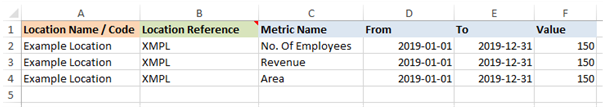
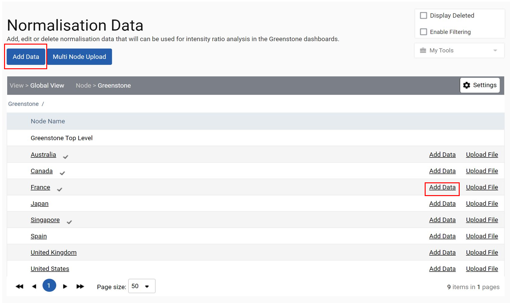
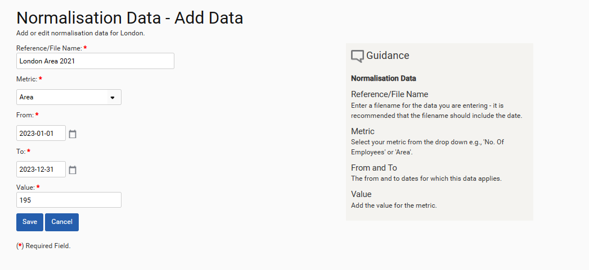
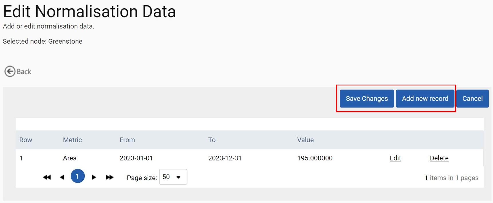
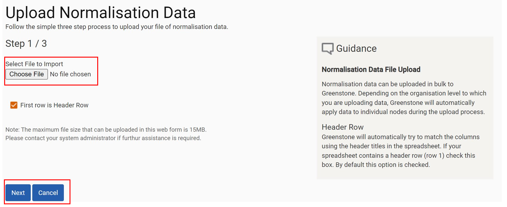
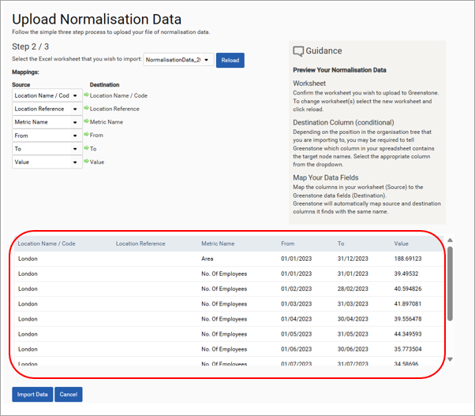
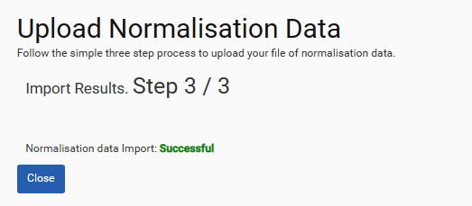
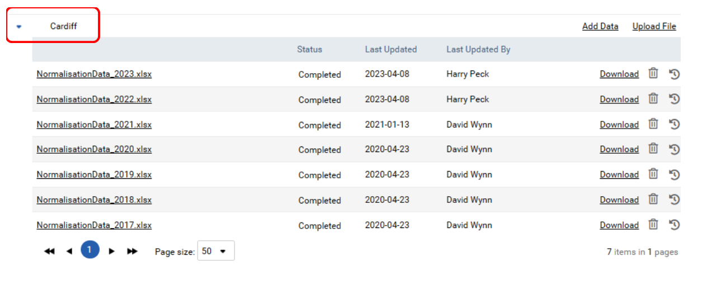

Normalisation data enables data across the modules to be displayed as an intensity measurement by a consistent metric, for example, per employee or per unit of office space. A template can be provided to enable you to collect this data in line with the example below. If you do not know the Location Reference for the node, please remove this column or leave it blank.

Normalisation data can be uploaded on an on-going basis using the manual input forms, or data template files for uploading multiple rows of normalisation data. To input normalisation data, navigate to the ‘Normalisation’ tile located within the ‘Utilities’ section on the ‘Homepage’.
Similar to uploading consumption data, this will take you to your organizational structure from which you can input normalisation data through the simple upload ‘Add Data’ or spreadsheet ‘Upload File’ function beside the node or by ‘Multi Node Upload’ if loading to multiple nodes.

Inputting Normalisation data – using the input form
If the normalisation data to be uploaded is only applicable to one node, then it is recommended that this data is uploaded using the input form. To do this, click ‘Add Data’ next to the node which will bring up this form. Please complete all the relevant details before clicking Save.

This will take you to the following screen where you can either ‘Save Changes’ or ‘Add new record’. Save changes will save the data that has already been input, whereas adding a new record will bring up the form above, where you can add an additional row of data.

Inputting Normalisation data – file upload
If the normalisation data to be uploaded is for multiple data rows, then it is recommended that this is uploaded using a spreadsheet. If this data is for one node, then click on ‘Upload File’ next to that node and follow the steps below.
If the data is for multiple nodes, click the ‘Multi Node Upload’ button and follow the steps below.
When you click on either of the two options indicated above the screen below will be displayed. Click on the ‘Choose File’ button to select the required file and then click on ‘Next’.
Clicking ‘Next’ will take you to the following screen. Please check carefully that the data displayed is what you need to upload. If not, then using the ‘Select the Excel worksheet that you wish to import’ selection list, select the correct worksheet and click ‘Reload’. This will then display the data for the selected worksheet.


Once you are satisfied that this is the correct data, then please click on ‘Import Data’. This will take you to this final screen where you should click ‘Close’ to return to the inputs page.

If you would like to check what normalisation data has been uploaded to a particular node, please expand the details attached to the node by clicking on the arrow to the left of the node name. This will then display all of the files that have been uploaded.
